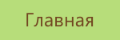
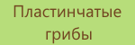
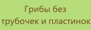
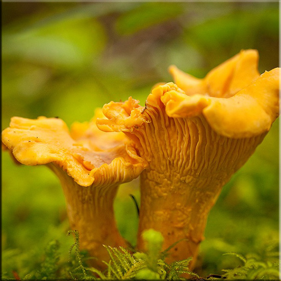
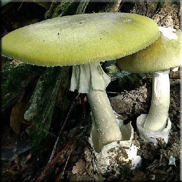
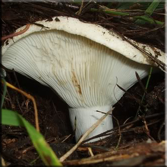
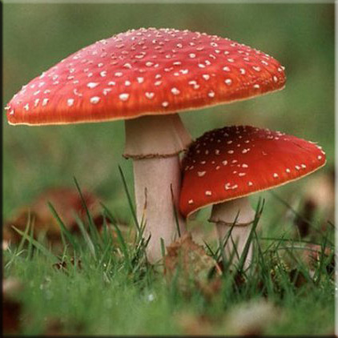

|  |  |  |  |
Грибы без трубочек и пластинок
| Лисичка очень известный съедобный гриб. Ярким цветом он напоминает лисий мех, за что и получил свое название. Встречается этот гриб в хвойных, лиственных и смешанных лесах с июля по октябрь. Лисички почти всегда растут семьями. Если найдешь одну, обязательно посмотри рядом — наверняка обнаружишь еще. Лисички замечательны тем, что не бывают червивыми. В них много витаминов и других полезных веществ. |  | |
|  | А мухомор вонючий совершенно белый (вонючим назван из-за неприятного запаха). Ножка у него покрыта чешуйками, как бы лохматая.
Этот гриб особенно опасен — он смертельно ядовит! Другое название вонючего мухомора —белая поганка.
| |
| Груздь настоящий весь белый. Отломив кусочек, увидим белую мякоть и белый млечный сок, который быстро желтеет. На Руси этот гриб с давних пор очень ценится. Млечный сок груздя едкий, из-за чего перед приготовлением его вымачивают и отваривают. |  | |
|  |
Когда мы слышим название «мухомор», представляем себе крупный гриб с красной шляпкой, украшенной белыми пятнышками. Это самый известный из мухоморов — мухомор красным. Он встречается в лиственных и хвойных лесах с июля по октябрь. Интересно, что этот гриб хорошо знают не только в России, но и в других странах. Он растет, например, в Южной Америке.
| |
© Дубовая Василиса 2015